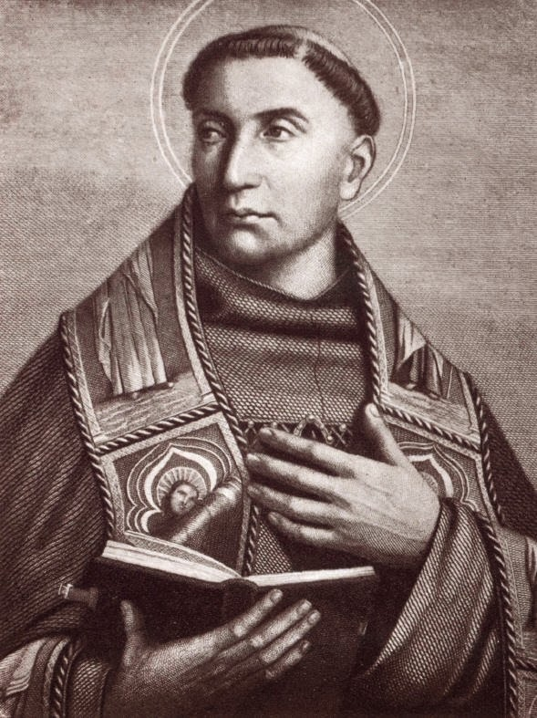

Бонавентура
1221 г. – 15 июля 1274 г.

Детство и юность
Бонавентура (Джованни Фиданца) (1221—1274) — итальянский схоласт, учился в Парижском университете, где был затем профессором, с 1257 года — глава францисканского ордена. В 1482 году был канонизирован. Объявлен одним из учителей католической церкви. Отстаивал августинианскую (Августин) теологию в противоположность своему современнику Фоме Аквинскому, учение которого (Томизм) представляло собой попытку синтеза христианской теологии и аристотелизма. Теория познания Бонавентуры опирается на неоплатонизм и пронизана мистикой. Человеческое познание Бонавентура оценивает, даже имея в виду его вершины, включая учение Аристотеля, как темноту по сравнению с божественным светом. Истина постигается озарением, которое христианин получает как благодать; условие познания истины — благочестивая жизнь и молитва. В споре об универсалиях придерживался позиции реализма (Реализм средневековый). Бонавентура — олицетворение католической ортодоксии, гонитель Р. Бэкона.
Философия Бонавентуры
Философские взгляды
Теология является для Бонавентуры владычицей всех светских наук, которые он объединяет под общим понятием философии, а единение с Богом, к которому любовь ведёт человека шестью ступенями познания, — величайшим благом. Это подробно обосновывается им в схоластическом сочинении «Itinerarium mentis in Deum» («Путеводитель души к Богу», 1259) и в мистическом сочинении «Reductio artium in theologiam» («О сведении наук к богословию», ок. 1257).
Выбор проблем в философии задаётся теологией и есть только три метафизических проблемы: творение, экземпляризм (индивидуация) и воссоединение с Богом через озарение (иллюминация).
Согласно учению Бонавентуры, у человека три ока: телесное, мысленное и созерцательное; последнее вырабатывается самоуглублением в душу как отражение Бога, самоуничижением, самоотречением и искренней молитвой. Как было 6 дней творения, так есть 6 степеней созерцания, за которыми следует высшее благо, слияние с Божеством.
Бонавентура писал почти по всем предметам, изучаемым студентами, и его труды содержательны. Многие из них посвящены вере во Христа, Бога и богословию. Никакая работа Бонавентуры не является исключительно философской, это яркая иллюстрация взаимопроникновения философии и теологии, что является отличительной чертой схоластического периода.
Большая часть философии Бонавентуры демонстрирует значительное влияние Августина Гиппонского. Настолько большое, что де Вульф считает его лучшим средневековым представителем августинианства. Бонавентура добавляет аристотелевские принципы к учению Августина, особенно в связи с освещением интеллекта и составом людей и других живых существ с точки зрения материи и формы[25]. Августин, который сформулировал многие доктрины, определяющие схоластическую философию, был невероятно важным источником платонизма Бонавентуры. Ещё одно заметное влияние оказал мистик Дионисий Ареопагит.
В философии Бонавентура резко контрастирует со своими современниками, Роджером Бэконом, Альбертом Великим и Фомой Аквинским. Хотя они могут рассматриваться как представляющие, соответственно, физическую науку, ещё находящуюся в зачаточном состоянии, и аристотелевскую схоластику в её наиболее совершенной форме, он представляет мистический и платонизирующий способ рассуждений, который уже до некоторой степени нашел свое выражение у Гуго и Ричарда Сен-Викторских, Александра Гэльского и Бернара Клервоского. Для него чисто интеллектуальный элемент представляет меньший интерес (хотя и никогда не отсутствует) по сравнению с живой силой привязанностей или сердца.
Подобно Фоме Аквинскому, с которым он разделял понимание многочисленных глубоких богословских и философских вопросов, он энергично боролся с аристотелевским представлением о вечности мира (хотя он и не соглашался с Аквинским относительно абстрактной возможности вечной вселенной). Бонавентура принимает неоплатоническую доктрину, согласно которой «формы» существуют не как существующие сущности, а как идеалы или архетипы в разуме Бога, в соответствии с которыми были сформированы действительные вещи; но эта концепция не имеет никакого особого влияния на его философию. Из-за этой философии физик и философ Макс Бернхард Вайнштейн утверждал, что Бонавентура проявлял сильные пандеистические наклонности.
Как и все великие доктора-схоласты, Бонавентура начинает с обсуждения отношений между разумом и верой. Все науки — всего лишь служанки теологии; разум может открыть некоторые моральные истины, составляющие основу христианской системы, но другие он может получить и постичь только через божественное откровение. Чтобы получить это откровение, душа должна использовать надлежащие средства, а именно молитву, проявление добродетелей, благодаря которым она становится пригодной для принятия божественного света, и медитацию, которая может привести даже к экстатическому единению с Богом. Высшая цель жизни — такой союз, союз в созерцании или разуме и в интенсивной поглощающей любви; но этого нельзя полностью достичь в этой жизни, и он остается будущей надеждой.
Личная жизнь
В 1243 году Бонавентура вступил в парижский францисканский монастырь меньших братьев, или миноритов, где изучал богословие у Александра Гэльского и Иоанна Рошельского. После их смерти в 1245 году Бонавентура продолжал обучение у Одона Риго и Уильяма Мелитонского, а в 1248 году стал библейским бакалавром и читал лекции по Священному Писанию. После составления Комментария к Сентенциям Петра Ломбардского он в 1253 году получил от канцлера Парижского университета право преподавания и титул доктора богословия, однако из-за оппозиции преподавателей Парижского университета из белого духовенства к монашеским орденам смог преподавать только в парижской францисканской школе. В 1257 году Бонавентуре все-таки предоставили кафедру на богословском факультете университета, но в том же году он был избран генералом францисканского ордена, после чего навсегда оставил преподавательскую деятельность. Тогда же он встретился с папой Александром IV.
В первые годы исполнения своей новой должности Бонавентура посетил большую часть орденских организаций, чтобы узнать проблемы и нужды ордена. В 1259 году он побывал в Лаверне, где написал трактат Путеводитель души к Богу. После возвращения во Францию Бонавентура стал готовиться к генеральному капитулу (общему собору духовенства францисканского ордена) в Нарбонне (1260) и кодифицировать существовавшие к тому времени декреты. Собор поручил ему написать новую биографию святого Франциска, после чего Бонавентура еще раз отправился на родину святого в Италию для сбора материалов. Он прервал свои занятия для знакомства с новым папой Урбаном IV, избранным 29 августа 1261 года. В апреле 1263 года Бонавентура был в Падуе на перенесении мощей святого Антония, а в мае того же года он провел генеральный капитул, где рассматривался вопрос об упорядочивании литургической жизни ордена. Там Бонавентура представил свое новое Житие святого Франциска. В 1264–1265 годах Бонавентура был при папском дворе, где произносил проповеди. В марте 1265 года в Перуждии Бонавентура встретился с новым папой Климентом IV. Позже, в ноябре того же года новый папа назначил Бонавентуру архиепископом Йоркским, но тот упросил папу оставить его в прежней должности. На генеральном капитуле в Париже в мае 1266 года Бонавентура предпринял меры для исправления злоупотреблений в ордене, особенно в отношении обета бедности.
До середины 1268 года Бонавентура оставался в своей резиденции в маленьком монастыре в Мант-сюр-Сен (Франция). Вероятно, в этот период были написаны некоторые его аскетические сочинения. В июле 1268 года Бонавентура был в Риме, где принял в духовное общение с францисканским орденом братство Гонфалоньери, и оставался в Италии до Ассизского собора в мае 1269 года. Во время возвращения в Париж Бонавентура столкнулся с новыми нападками на нищенствующие ордена Герарда Аббевильского, против которого написал свою Апологию бедных (1270). Весной 1273 года Бонавентура был в Париже, где организовал знаменитые Собеседования о Шестодневе. Вскоре после этого папа Григорий X одновременно произвел его во епископа Альбанского и в кардинала. Бонавентура встретился с папой к северу от Флоренции в июле 1273 года и проследовал с ним в Лион. Там в ноябре 1273 года Бонавентура был рукоположен во епископы и до мая 1274 помогал папе в подготовке II Лионского собора.
Смерть
На соборе, открывшемся 7 мая 1274, он защищал идеалы нищенствующих орденов и участвовал в решении главного вопроса собора — унии Церквей. В разгар этой деятельности Бонавентура неожиданно заболел и 15 июля 1274 года скоропостижно скончался; в тот же день он был похоронен во францисканской церкви в присутствии папы.
Впечатление, которое Бонавентура произвел на своих современников, отражено в Кратком упоминании (Brevis Notitia) Лионского собора: “На его похоронах было много печали и слез; ибо Господь дал ему такую благодать, что все, кто его видел, были исполнены безграничной любовью к нему”. По словам учителя Бонавентуры Александра Гэльского, в том не было видно, что Адам согрешил. Тем не менее канонизация Бонавентуры как святого и учителя Церкви состоялась только 14 апреля 1482 года по инициативе папы Сикста IV. В 1588 году папа Сикст V включил Бонавентуру в число главных учителей Церкви, а Пий V объявил Бонавентуру шестым учителем Церкви после Фомы Аквината с почетным титулом doctor seraphicus (‘серафический учитель’) вместо более раннего doctor devotus (‘посвященный учитель’).
Основные труды
Бонавентура. Путеводитель души к Богу. — М.: Греко-латинский кабинет Ю. А. Шичалина, 1993. — 192 с.